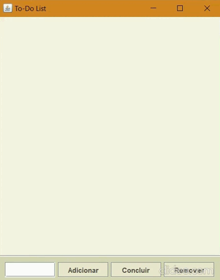

To-Do
Este projeto veio do desejo de criar uma ferramenta prática para o dia a dia, aplicando conceitos fundamentais de desenvolvimento de software em Java. A ideia foi construir uma lista de tarefas (To-Do List) que fosse além do básico 'adicionar e remover'. O objetivo principal foi exercitar a lógica de programação em Java e a gestão de estados de uma aplicação. Através desta ferramenta, é possível organizar rotinas de forma clara, marcando tarefas como concluídas e mantendo o foco no que realmente importa. O projeto foca também na construção de uma interface agradável e intuitiva usando ferramentas básicas e simples no Java.